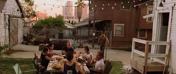
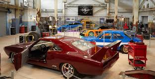

tentang kami
memang film laga, tapi tetap ada beberapa dialog bermakna dari film-film ini yang bisa juga jadi pegangan hidup buat kamu. Selain mengumbar banyak adegan laga, film waralaba ini juga kerap kali menunjukkan betapa penting dan kuatnya ikatan keluarga. Bagi Dominic Toretto, keluarga, baik yang sedarah maupun bukan, adalah hal yang paling penting dari segala yang ada di dunia. - iOS: https://sin.do/u/ios
Ucapan "Saya bukan punya teman, yang saya punya adalah keluarga" ini diucapkan Dom Toretto dalam "Furious 7" (2015)."Kita melakukan yang terbaik, kita berkembang, oke?" ini dikatakan oleh Brian O’Conner dalam "Fast and Furious 6" (2013)."Hidup itu sederhana. Kamu membuat pilihan dan setelah itu tidak lagi melihat ke belakang". Ini adalah kalimat penting yang dikatakan oleh Han Lue dalam "The Fast and The Furious: Tokyo Drift" (2006).
"Uang akan datang dan pergi. Kita semua tahu itu. Hal terpenting dalam hidup ini adalah orang-orang yang ada di ruangan ini. Di sini, saat ini" diucapkan oleh Dom Toretto dalam "Fast Five" (2011).
bengkel mobil kami
Ini adalah kalimat yang sangat penting dan diucapkan oleh Han Lue dalam "The Fast and The Furious: Tokyo Drift" (2006). Artinya kurang lebih bahwa kepercayaan dan karakter yang kuat adalah hal yang paling penting dalam sebuah hubungan, dan orang-orang yang kamu pilih untuk tetap dekat denganmu bisa menggambarkan karaktermu yang sebenarnya
Selain mengumbar banyak adegan laga, film waralaba ini juga kerap kali menunjukkan betapa penting dan kuatnya ikatan keluarga. Bagi Dominic Toretto, keluarga, baik yang sedarah maupun bukan, adalah hal yang paling penting dari segala yang ada di dunia.